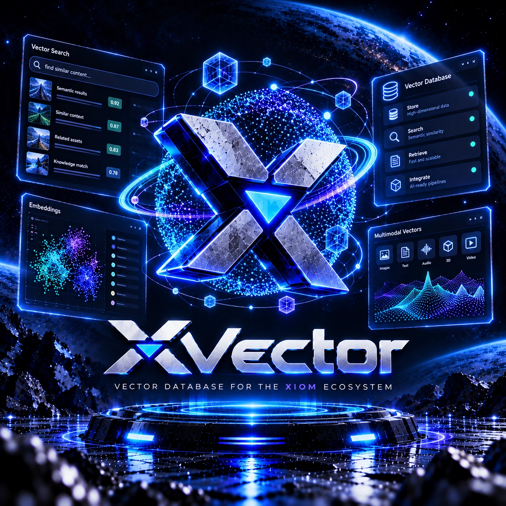
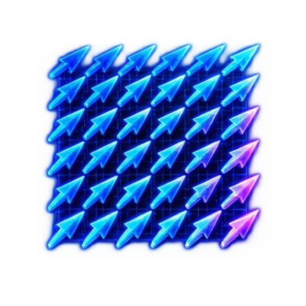
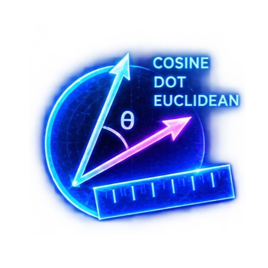
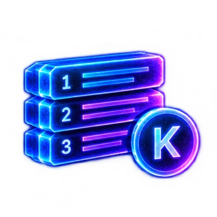
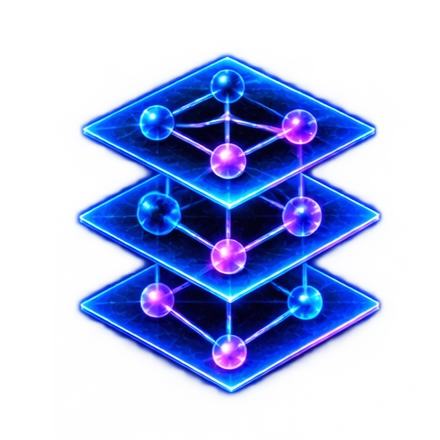
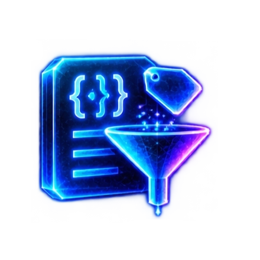
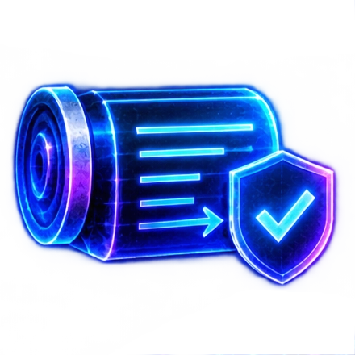
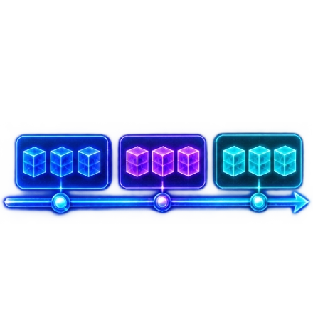
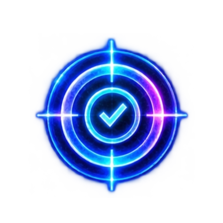

XIOM project -- experimental, pre-alpha
XVector
A vector database engine for the XIOM ecosystem: dense vectors with cosine, dot-product and euclidean metrics, exact flat search, an in-memory HNSW graph, payload filtering and WAL-backed durability -- built on the shared core primitives rather than around them.
Phase 1 showcase: the repository is private during development, so there are no downloads and no release claims yet. The exact engine, the ANN index and the durability path are exercised by suites and probes in the private repository.
What works today

Dense vectors
Dense vector type and math.

Distance metrics
Cosine, dot-product and euclidean.
Exact search
Flat KNN and range search -- the oracle every index is measured against.

Top-K results
Bounded top-K heap with the len() <= k invariant.

HNSW graph
Hierarchical layers with greedy descent and bounded edges; pruning and ef-parameter search are being hardened.

Payload filtering
Filter AST, pre-filtered search and payload hydration.

WAL-backed writes
Upsert and recovery for vectors and metadata.

Collections and segments
Scaffolded against the roadmap; the durable manifest is in progress.

Recall harness
Measuring ANN recall against the exact oracle -- in progress.
Multimodal vectors
Image, text, audio, 3D and video embeddings -- on the roadmap.
What is next
- Harden HNSW: neighbour pruning, recall harness, tombstones.
- Persistence: file-backed segments, durable manifest, restart-clean recovery.
- Then metadata indexes and the pre/post filter planner; IVF and sharding after that.
- Phase 2: GitHub releases and mirror installers, once the repository opens and the gates pass.
Pre-alpha means pre-alpha: the exact core and filtering work today, but the durable, production-shaped engine is still being built.
Downloads
Nothing to download yet. Phase 2 publishes GitHub releases and mirror installers for every OS, like the toolchain's.